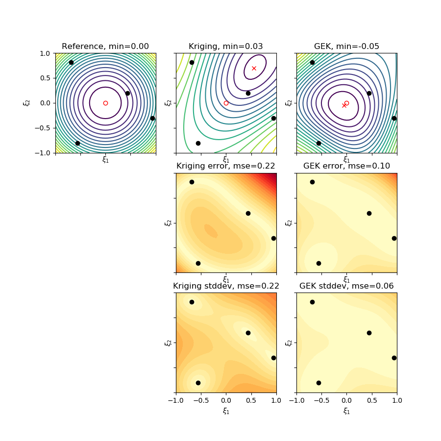

Kriging and Gradient-Enhanced Kriging for VKI Lecture Series¶
Python module implementing interpolation with Gaussian process regression, a.k.a. Kriging. Features:
- Arbetrary dimensional interpolation.
- Use of gradients in reconstruction (Gradient Enhanced Kriging).
- Simple and univeral Kriging.
- Implementation follows Bayesian derivation of Kriging, descibed in the tutorial.
Note
This code was written for the Von Karman Institute lecture series on multi-disciplinary optimization, and is primarily intended as educational (accompanying the tutorial). As such it sacrifices many possible code optimizations to clarity. If you are planning to use it for applications, it may still be fast enough, depending on the size of your data. Preferentially use routines in the module Kriging and Gradient-Enhanced Kriging - version 2 (kriging_v2).
Installing¶
With git (recommended for educational use)¶
The package is pure Python 3. To get the source, clone the GitHub repository:
git clone https://github.com/rdwight/vkikriging.git
and add vkikriging to your PYTHONPATH (e.g. with bash):
export PYTHONPATH=/home/fred/vkikriging:$PYTHONPATH
You’ll need numpy, scipy, matplotlib and algopy (automatic differentiation).
I recommend using an Anaconda Python install.
With pip (recommended for applications)¶
The package is distributed via PyPI, so just use:
pip install vkikriging
Usage¶
Basic usage with plotting (1d)¶
Using the class Example1d you only have to specify a function, its derivative,
the locations of sample points, and parameters for the Kriging/GEK model. The following
approximates a sine curve on [-5,15] with 5 samples with gradients:
import numpy as np
import matplotlib.pyplot as plt
from examples.example1d import Example1d
# 1. Initialize the function to approxiate, samples and Kriging paramters
ex1d = Example1d(np.sin, np.cos,
np.linspace(0, 10, 5),
gamma=1.0, sigma_d=0.001, sigma_dg=0.01,
xi_min=-5, xi_max=15)
# 2. Build the Kriging model, v1, v2 or v3. For v1, v2 GEK model is also built.
ex1d.build_surrogate_v1()
# 3. Plot the model, use any of all of the plot_* functions
fig = plt.figure(figsize=(10, 6))
ax = fig.add_subplot(111)
ex1d.plot_gek(ax)
ex1d.plot_posterior_samples_gek(ax)
ex1d.plot_reference(ax)
ex1d.plot_observed_gradients(ax, length=1.)
plt.show()
Some timing information is printed to stdout, and the following figure is plotted:
The black curve is the exact function, black circles and lines are samples of the function and its derivative. The heavy blue line is the GEK mean, with 1,2,3-standard-deviation regions in light blue. The thin blue lines are 10 independent samples from the predictive distribution.
Basic usage with plotting (2d)¶
To achieve basic interpolation in 2d use the class Example2d. This expects an
object describing the function, with attributes f, df, xmin, xmax,
and xopt. See examples in Test functions for (global) optimization problems (test_functions). To approximate a
parabola with Sobol samples:
from vkikriging.test_functions import Parabola
from vkikriging.sampling import sobol
from examples.example2d import Example2d
# 1. Initialize the function to approxiate, samples and Kriging paramters
f = Parabola()
xi = sobol(4, 2) * (f.xmax - f.xmin) + f.xmin
ex2d = Example2d(f, xi, gamma=1., sigma_d=0.01, sigma_dg=0.01)
# 2. Build the Kriging model, v1, v2 or v3. For v1, v2 GEK model is also built.
ex2d.build_surrogate_v1()
# 3. Plot the model
ex2d.plot_contours()
Which produces the following figure:
The red circle is the exact minimum, and the crosses are the minima approximated by Kriging/GEK.
Standard usage¶
You’ll
Documentation and API reference¶
- vkikriging package
- Prior covariance operators (covariance)
- Kriging and Gradient-Enhanced Kriging - version 1 (kriging_v1)
- Kriging and Gradient-Enhanced Kriging - version 2 (kriging_v2)
- Universal Kriging - version 3 (kriging_v3)
- Module of basic, generic functions (mylib)
- (Pseudo-)random sampling schemes on the unit hypercube (sampling)
- Test functions for (global) optimization problems (test_functions)
- Example surrogate modelling in 1d (examples/example1d)
- Example surrogate modelling in 2d (examples/example2d)